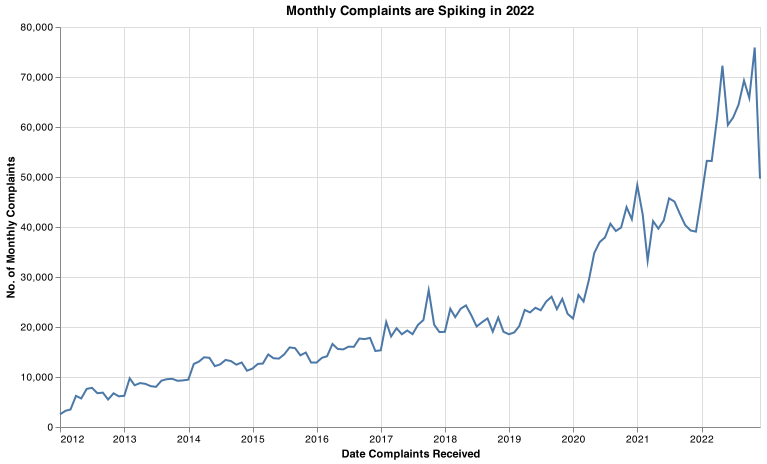
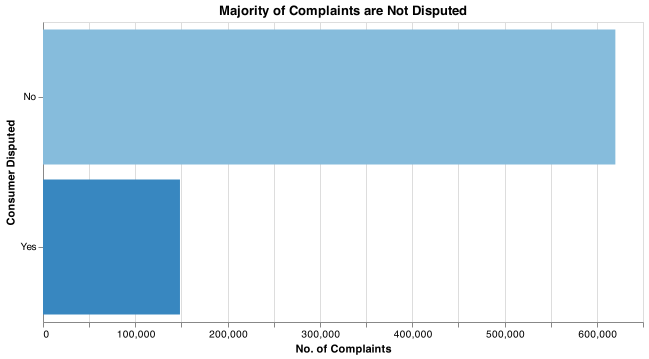
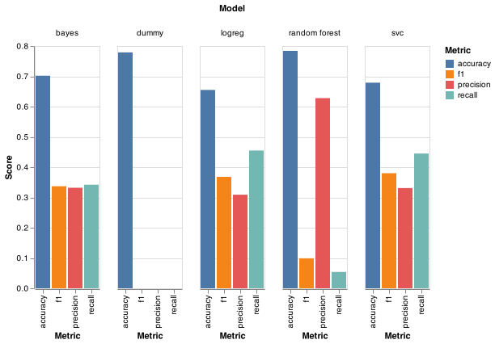

| columns | valid_count | unique_count |
|---|---|---|
| Unnamed: 0 | 3084450 | 3084450 |
| date_received | 3084450 | 4003 |
| product | 3084450 | 18 |
| sub_product | 2849156 | 76 |
| issue | 3084450 | 165 |
| sub_issue | 2401899 | 221 |
| consumer_complaint_narrative | 1107253 | 967541 |
| company_public_response | 1339720 | 11 |
| company | 3084450 | 6565 |
| state | 3044459 | 63 |
| zip_code | 3043948 | 34429 |
| tags | 350065 | 3 |
| consumer_consent_provided | 2264772 | 4 |
| submitted_via | 3084450 | 7 |
| date_sent_to_company | 3084450 | 3952 |
| company_response_to_consumer | 3084446 | 8 |
| timely_response | 3084450 | 2 |
| consumer_disputed | 768443 | 2 |
| complaint_id | 3084450 | 3084450 |
Analysis of Customer Complaints on US Financial Products
0.1 Summary
Here we used multiple classification algorithms to predict whether a financial product consumer will dispute a complaint made to the Consumer Financial Protection Bureaus’ (CFPB) Consumer Complaints Database(Consumer Complaints Database 2022).
0.2 Introduction
As of 2022, the CFPB receives over 60,000 consumer complaints a month related to companies financial products. Between December 2011 and November 2022 over 140,000 complaints were disputed by consumers costing both the companies and CFPB time and money.
Complaints can be responded to by the company in multiple ways but each consumer has the opportunity to dispute the provided response. These disputes are likely costly to both the CFPB and the companies for which they are raised so being able to anticipate whether a complaint will be disputed has the potential to save both time and money for companies and the CFPB alike. Especially, as we observed that the number of complaints spikes near 2022 (Figure 1), it is essential to understand the tactics of handling these complaints.

0.3 Methods
0.3.1 Data
We used pandas(McKinney 2010), scikit-learn(Pedregosa et al. 2011), and TidyVerse (Wickham et al. 2019) to collect, analyze, and summarize our data. The CFPB database contains ~3 million complaints starting from December 2011 all the way up to November 2022 when this report was written. Approximately 4.8% of all complaints are disputed, with the ~75.1% of complaints having an unknown dispute status. Figure 2 below shows the balance of dispute status.

Each field has varying amounts of missing values as can be seen in Table 1 below. Fields such as tag where there are numerous entries missing values were removed from the analysis. Individual complaints with missing information were removed from the data-set for analysis since the data set is large enough to still have a significant number of training examples for the analysis (~20,000).
0.3.2 Analysis
A predictive approach using multiple classification models was used to attempt to predict whether a consumer would dispute a complaint or not.
Feature pre-processing approach and rationale is as follows:
| Features | Preprocessing Step | Rationale |
|---|---|---|
| consumer_complaint_narrative | CountVectorizer max_features = 1000 |
High Amount of Unique Textual Data |
product sub_product issue company_public_response company company_response_to_consumer |
OneHotEncoder (Binary) OneHotEncoder OneHotEncoder OneHotEncoder OneHotEncoder OneHotEncoder |
Two Products Included Categorical Values Categorical Values Categorical Values Categorical Values Categorical Values |
| consumer_consent_provided | dropped | Single Category |
0.4 Results & Discussion
We applied the DummyClassifier, LogisticRegression, Naive Bayes, SVC, and RandomForestClassifier to predict the target whether the customer disputed. The models were applied using default parameters and a five-fold cross-validation were applied using the training split. We examined and recorded the accuracy, precision, recall, and f1 scores to be the metrics evaluating the models. The results of the cross validation is presented below:
| dummy | logreg | bayes | svc | random.forest | |
|---|---|---|---|---|---|
| fit_time | 0.978 | 5.475 | 1.674 | 123.556 | 22.726 |
| score_time | 0.257 | 0.431 | 0.369 | 24.588 | 0.592 |
| test_accuracy | 0.779 | 0.655 | 0.702 | 0.679 | 0.784 |
| test_recall | 0.000 | 0.455 | 0.342 | 0.445 | 0.056 |
| test_precision | 0.000 | 0.309 | 0.332 | 0.331 | 0.631 |
| test_f1 | 0.000 | 0.368 | 0.337 | 0.380 | 0.102 |
Figure 3 below illustrates a visual representation of the performance of the models. We observe a high accuracy of the DummyClassifier. Given the imbalance of the class, the accuracy would not be an important metric in this problem. Instead, from the company’s perspective, we focus more on improving the precision, the recall, and the f1 score. Noticeably the company likely wants to spot the people who are going to dispute, thus, the recall score here is more important compared to precision.

The results above motivates us to choose LogisticRegression as the final estimator. It has overall a great f1 score and among the recall is among highest scores. Though we sacrifices some accuracy, the precision, recall, and f1 scores are significantly improved. We also see that SVC gives slightly higher scores than LogisticRegression; however, in Table 2 we see that it takes substantially more time to train and cross validate. in addition, due to the complexity of the model we also lose a degree of model incontestability. Overall, we choose LogisticRegression over SVC due to its scalability and interpretability.
0.5 Conclusion
The analysis in this reports focuses on using a machine learning approach to predict whether the consumer is going to dispute after the company’s response. We processed the features such as the product, consumer’s complaints, and company’s responses. We trained five different models that optimized the f1 score and chose LogisticRegression as a suitable estimator for analysis of this problem.
1 References
Consumer Complaints Database. 2022. Consumer Financial Protection Bureau. https://www.consumerfinance.gov/data-research/consumer-complaints/#download-the-data.
McKinney, Wes. 2010. “Data Structures for Statistical Computing in Python.” In Proceedings of the 9th Python in Science Conference, edited by Stéfan van der Walt and Jarrod Millman, 56–61. https://doi.org/ 10.25080/Majora-92bf1922-00a .
Pedregosa, F., G. Varoquaux, A. Gramfort, V. Michel, B. Thirion, O. Grisel, M. Blondel, et al. 2011. “Scikit-Learn: Machine Learning in Python.” Journal of Machine Learning Research 12: 2825–30.
Wickham, Hadley, Mara Averick, Jennifer Bryan, Winston Chang, Lucy D’Agostino McGowan, Romain François, Garrett Grolemund, et al. 2019. “Welcome to the tidyverse.” Journal of Open Source Software 4 (43): 1686. https://doi.org/10.21105/joss.01686.